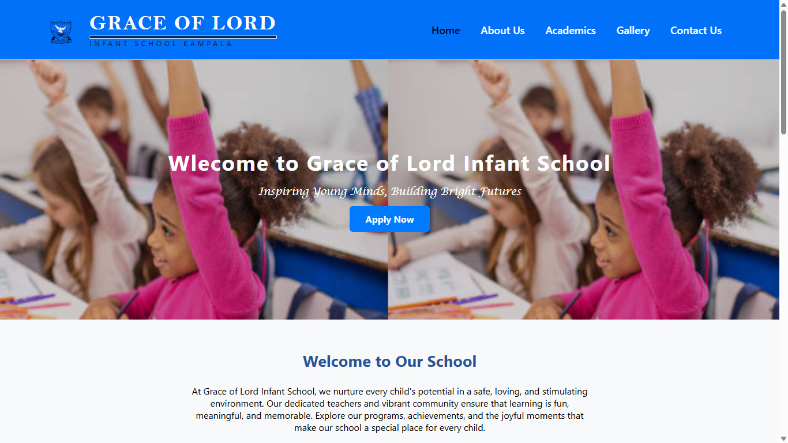
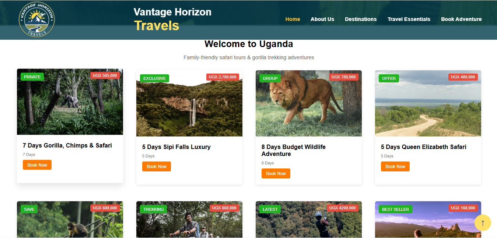
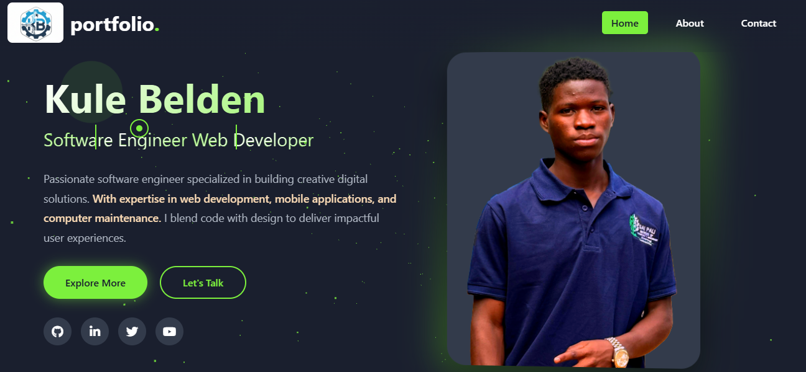
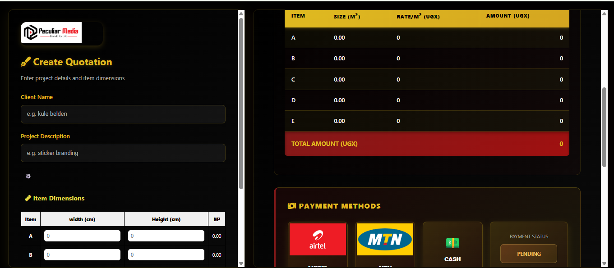

Software Engineer & Digital Innovator
I'm Kule Belden, a passionate software engineer dedicated to building innovative digital solutions that transform ideas into reality. With expertise spanning web development, mobile applications, and computer maintenance, I bring a holistic approach to every project.
Sai Pail Institute of Technology and Management
Kilembe Senior Secondary School
Izinga SDA Primary School
Advanced responsive web design with modern CSS frameworks and animations
ES6+, DOM manipulation, APIs, and modern frameworks
Server-side scripting, MySQL database integration, and REST APIs
Data processing, automation scripts, and backend development
Object-oriented programming and Android app development
System programming, data structures, and algorithms
Cross-platform mobile applications using modern frameworks
Hardware diagnostics, software troubleshooting, and system optimization

A complete school website with admission forms, news updates, and gallery. Built with HTML, CSS, PHP, and JavaScript.
View Project
A tourism company website showcasing local attractions, booking system, and virtual tours. Features responsive design.
View Project
This portfolio website showcasing skills, projects, and contact information. Features 3D animations and modern design.
View Project
A web app that records real time measurements of branding spaces and delivers instant quotations
View ProjectCreating beautiful, functional, and responsive websites using modern technologies like HTML5, CSS3, JavaScript, and PHP.
Building cross-platform mobile applications that work seamlessly on both iOS and Android devices.
Professional computer repair and maintenance services including hardware upgrades, virus removal, and system optimization.
Creating intuitive and user-friendly interfaces that provide excellent user experiences.
I'm always excited to take on new projects and bring ideas to life. Let's discuss how I can help you achieve your goals.